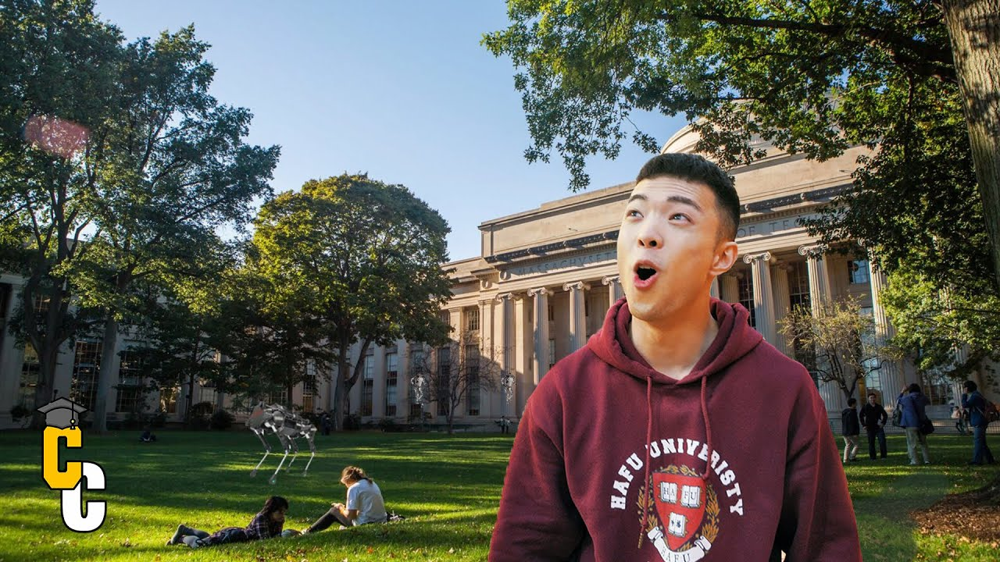

【麻省理工学院校园内部一览 | MIT校园导览】
Summary: Join us on a tour of MIT's iconic campus, featuring the Great Dome, Stata Center, Media Lab, and more, showcasing its blend of cutting-edge research, innovation, and vibrant student life.
摘要： 跟随我们游览麻省理工学院标志性校园，包括大圆顶、斯塔塔中心、媒体实验室等，展示其前沿研究、创新与活力的学生生活。

⏱️ Estimated Reading Time: 9 min
Ah hi guys welcome to the first episode campus crawl where I take you to the top universities around the world today we're starting it off with Massachusetts Institute of Technology all right let's go.
大家好，欢迎来到《校园漫步》第一集，今天我将带大家参观全球顶尖大学，首站是麻省理工学院，我们出发吧！
Right now we're walking in the Gillian Court this is where students come some days or they host a lot of events here and what you see behind me is actually the most recognized view of MIT the Great Dome.
现在我们走在吉莲庭院，这里是学生常来或举办活动的地方，而我身后的正是MIT最著名的标志——大圆顶。
This is where the engineering library is and we're a lot of the laboratories on so we're gonna go check that out let's go.
这里是工程图书馆所在地，周围还有许多实验室，我们现在就去一探究竟，走吧！
Admissions office right here this is where hopefully we can finesse a degree into MIT.
招生办公室就在这里，希望我们能在这里“搞定”一个MIT学位。
So the best thing about MIT is that there's so much IQ concentrated in one area and that's what's happening down there today they have like a science fair end-of-term project basically it's a showcase of what have you've done for the whole semester.
MIT最棒的一点是这里汇聚了超高智商，今天楼下正举办科学展览期末项目，展示整个学期的成果。
And these undergraduate projects compared to other schools are a lot more complex and they go a lot in depth so that's what I think is the best about MIT they're so practical and they're so knowledgeable about the sciences there's just so much sharing of knowledge I love it.
与其他学校相比，这些本科生项目更复杂深入，这就是MIT最棒的地方——务实、科学知识丰富，且充满知识共享，我超爱这里！
So right now we're about to enter the dome library which is a famous engineering library.
现在我们要进入圆顶图书馆，这是一个著名的工程图书馆。
All right so right now we are actually entering Stata Center this is basically like the magic hassle of MIT all right like come walk with me.
现在我们正进入斯塔塔中心，这里堪称MIT的“魔法城堡”，跟我一起走吧！
So Stata is actually home to the labs for computer science artificial intelligence and information and decision systems so a lot of research is done here.
斯塔塔中心是计算机科学、人工智能及信息与决策系统实验室的所在地，大量研究在此进行。
This building is probably like the most uniquely looking what I call her the magic House of Leaves it's like yellow and it's a ground and everything oh my god this is amazing look at this Wow this this would be a good Instagram photo right here.
这栋建筑造型独特，我称它为“魔法叶屋”，黄色外墙与结构…天啊太惊艳了，这里绝对是Instagram打卡点！
This building is just filled with these like inventions basically so most people don't show you this during campus fuss but Jen our campus crawl I'll show you this.
这栋楼里到处都是发明创造，普通校园游不会展示这些，但我们的《校园漫步》带你看个够！
This is a typical classroom a seminar room at MIT combination it's pretty simple basically just table and whiteboard I mean think projector no classrooms are all the same no matter where you go so.
这是MIT典型的研讨教室，布置简约——桌椅、白板和投影仪，其实哪里的教室都差不多。
We just came out of the Stata building MIT campus is huge there's like 30 to 50 different buildings and they're all numbered they don't have names except for Stata that one's special you know.
刚离开斯塔塔中心，MIT校园超大，有30-50栋编号建筑，只有斯塔塔有名字，它很特别。
Yeah we're not gonna have time to go through those but think of them as very similar to the one we just visited offices classrooms and research trims now we'll show you the media labs do like a 360 around.
没时间一一参观，但它们都和刚才看的差不多——办公室、教室和研究区。现在带你们360度看看媒体实验室。
This is the Media Lab it looks like a modern museum because it's actually infused with the list art museum what do they do here there's basically like 25 different research groups that work on like 350 different research projects.
这就是媒体实验室，像现代艺术博物馆，25个研究组在此开展约350个项目。
Everything from how children learn neuroscience electric cars and stuff it's very cool and at the bottom it's free for anyone to enter it's kind of like a museum.
从儿童学习到神经科学、电动汽车等，超酷！底层免费开放，像个博物馆。
I think the Media Lab is policy probably the coolest part of MIT because this is where all the learning comes into reality in terms of these projects people create stuff here they're utilizing their knowledge and that's why I love all these things are so freakin cool I feel inspired being in this place.
媒体实验室可能是MIT最酷的地方，知识在这里通过项目变为现实，人们运用所学创造，我超爱这里，超有启发性！
The best part about MIT is it's right beside the ocean and get a whole view of Boston so when you're tired of coding or building robots you can just come for a light walk it is truly beautiful.
MIT最棒的是毗邻大海，能俯瞰波士顿全景，编程或造机器人累了，来散个步，超美！
So it's downtown over there so MIT is actually open campus but it feels like an enclosed community it has that campus feel because everyone here is either professors or students and Chinese tourists.
那边是市中心，MIT虽是开放校园，但师生和中国游客让这里充满封闭社区感。
About Chinese tourists there mainly in the main building where the dome is it's literally a bunny on campus that's so cute oh no bunny no.
中国游客主要集中在主楼圆顶附近…哇有只校园兔子！啊它跑了！
Now we're in the McDermott Court which is named after mr. and Miss Eugene McDermott which made a lasting contribution to the Arts at MIT.
现在我们在麦克德莫特庭院，以对MIT艺术有深远贡献的尤金·麦克德莫特夫妇命名。
Because as you can see behind me that's called the big sale or in French it's called Legrand Wall excuse my pronunciation it's 40 feet tall and 35 parts the parts were created in France but then assembled here in Cambridge Massachusetts.
如你所见，身后是《大帆》（法语名Le Grand Voilé，发音见谅），高40英尺，35个部件在法国制作，于剑桥市组装。
This is just one of many sculptures at MIT because in addition to the sciences they also care about the arts design and practicality and that's how you create a good product.
这只是MIT众多雕塑之一，因为除了科学，他们也重视艺术设计与实用性，这才是好产品的关键。
So I met a friend Ingrid hello you lived here I lived here junior yuria loves dorm life like dorm life so there's like West Campus and there's East Campus side dorms yeah and so this is itself it's called East Campus.
遇到朋友Ingrid，她住过东校区宿舍，西校区更传统，东校区更艺术随性。
I used to live in that dorms and then I lived in this store yeah besides kind of like counterculture I guess so it's like much more artsy oh okay and then West Campus is more of what you think of when you think I'd like your stereotypical dorm so this is more chill yeah definitely much more chill.
西校区是典型宿舍，这里更“反文化”、更艺术随性。
So you guys didn't have crazy party oh nice you painted I don't think animals like me the rabbit ran away from you - oh wow that was a long tour but I think every part was just as exciting as Dupree thank you for coming along on this very first episode the inaugural episode of campus crawl we're starting off good.
“你们不开疯狂派对？”“我们画画…动物好像不喜欢我，兔子都跑了。”这次长导览每处都精彩，感谢跟随《校园漫步》首期！
Oh comment below what your favorite thing was and something that you learned today well I am from half who University exchanging at the top universities in the world with campus I hope you come along and crawl with me next time and click subscribe if you want more of these videos that's it for today I'll see you at Harvard next time peace.
留言告诉我你最爱哪部分和学到什么！我来自哈尔夫大学，正交换参观全球顶尖学府，下次继续“漫步”，订阅不错过新视频！下期哈佛见，拜！
Well you see behind me it's actually my childhood dream that were abandoned and crushed so right now we're in the dead center of Harvard Yard right behind me this way there's a tradition at Harvard.
（彩蛋）身后是我破碎的童年梦想…现在我们正站在哈佛园中心，身后是哈佛的传统…